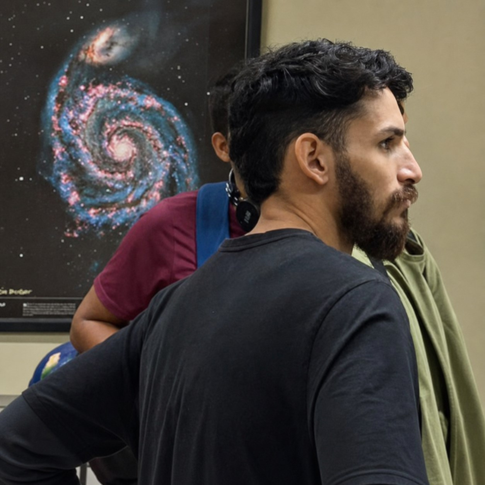

Lattice Boltzmann Methods
D3Q19 pore-scale hydrodynamics coupled to advection–diffusion–reaction models, with verification through permeability, mass conservation, and breakthrough behaviour.
About me
Graduate Researcher in Computational Geophysics
I investigate fluid flow, solute transport, and mineral dissolution in porous rocks at the Federal University of Pará (UFPA), within the Amazon Sustainable Petroseismic Laboratory (LPSA).
